구미호를 잘못 키웠다 같은 웹툰 추천

구미호를 잘못 키웠다 · 노노 / 윰윰 / 다나안
구미호를 잘못 키웠다 재밌게 봤다면 이 웹툰들도 좋아할 거예요. 같은 장르이면서 고자극로맨스, 인외존재, 로판 같은 요소가 겹치는 작품을, 겹치는 요소가 많은 순서로 20개 골랐어요.
2026-10-05 기준 · 네이버웹툰·카카오웹툰·레진코믹스 · 성인 작품 제외
내 취향으로 직접 골라 추천받기 →-
1
 카카오웹툰
카카오웹툰내가 버린 개에게 물렸을 때
윈터 공작가에선 개를 기른다. 주인에게 늘 순종하는 검은 개를.. 윈터가의 공녀, 이블린 윈터. 자신만을 따르던 개, 길라스 블랙을 잔인하게 내쫓는다. “저를 사랑하신다고 하시지 않았습니까.” “사랑? 그 말을 믿었어? 버러지 같은 게 주제도 모르고…
고자극로맨스로판로맨스카카오웹툰에서 보기 → · 내가 버린 개에게 물렸을 때 같은 웹툰 → -
2
 카카오웹툰
카카오웹툰남편의 말대로 정부를 들였다
' “기억하지 루이제? 내 사생활에 참견하는 순간 이 결혼은 끝이야. 그걸 받아들인 건 당신이고.” 결혼 기간 약 3년. 끊이지 않고 바람을 피우는 남편에게 지친 어느 날, 남편이 정부를 들이라고 했다. 그의 말대로 정부를 구해보려고 뒷골목에서 가장…
고자극로맨스로판로맨스카카오웹툰에서 보기 → -
3
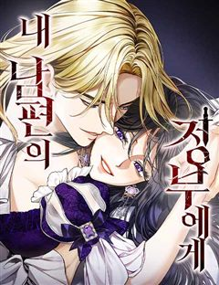
네이버웹툰내 남편의 정부에게
나, 레티시아 비올렛은 남편에게 헌신했지만, 모든 것을 잃었다. 그대로 목숨까지 잃을 뻔하던 찰나, 한 남자가 나타난다. 그 남자는 완벽한 복수를 이루도록 도와준다는데... "제 복수를 이루어 주겠다는 말... 꼭 지켜 주세요." 날 죽음까지 몰아넣…
고자극로맨스로판로맨스네이버웹툰에서 보기 → -
4
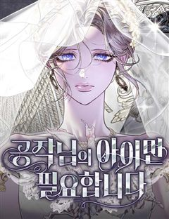
네이버웹툰공작님의 아이만 필요합니다
‘과거로 돌아갈 수 있다면, 그 사람을 사랑하지 않을 텐데.’ 회귀 후, 전남편과의 두 번째 결혼은 오직 아이를 위해서였다. 그렇게 기적처럼 얻은 두 번째 생은 사랑을 갈구하던 전생과 달리 오로지 아이를 다시 만나겠다는 일념하에 그와의 결혼을 선택했…
고자극로맨스로판로맨스네이버웹툰에서 보기 → -
5
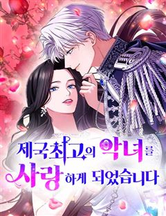
네이버웹툰제국 최고의 악녀를 사랑하게 되었습니다
여러 여인들을 농락하며 독신 생활을 고수하는 걸로 유명한 공작, 레이븐. 어느날 그런 그 앞에 남자를 싫어하는 것으로 이름높은 제국 최고의 악녀, 에스테렐라 공녀가 나타나 구혼한다. 수많은 염문을 뿌리고 다니는 레이븐과 남자라면 질색하는 악녀의 결혼…
고자극로맨스로판로맨스네이버웹툰에서 보기 → -
6
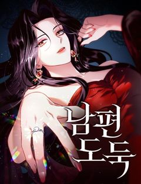
네이버웹툰남편 도둑
재산을 상속받기 위해 반드시 결혼해야만 하는 클래이시는 나이 차이도 별로 나지 않는 조카 메런의 훼방으로 번번이 연애 할 기회를 놓치다 운명처럼 만난 남자와 진정한 사랑 끝에 결혼에 이르게 된다. 행복한 신혼생활 중 이를 시기한 메런이 시간을 돌려…
고자극로맨스로판로맨스네이버웹툰에서 보기 → -
7
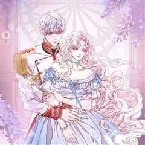
카카오웹툰비비안을 잊어주세요
“나와 결혼해 줘, 비비안.” 그와 함께라면 행복한 미래가 올 거라 믿고 있었다. 하지만, 그가 황제가 되고 난 후 모든 것이 변하기 시작했다. 갑자기 변해버린 그의 태도. 밤마다 공녀와 밀회한다는 이상한 소문. 결국 나는 황궁에 유폐되고, 그가 하…
고자극로맨스로판로맨스카카오웹툰에서 보기 → -
8
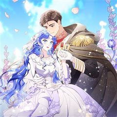
카카오웹툰엄마는 또 처음이라
“이곳에 지장을 찍으시죠, 그린트 영애.” “싫어요!” “피곤하게 만들지 말고 어서.” “싫다니까요. 내가 왜 당신이랑 결혼을 해요?” “그럼 영애가 누구랑 결혼을 하겠습니까?” 숨이 섞일 정도로 가까운 거리에서, 테리우스 허트는 조심스럽게 검지를…
고자극로맨스로판로맨스카카오웹툰에서 보기 → -
9카카오웹툰
파옥
한민트 작가의 <파옥> 정식 웹툰화! 용은 잃어버린 생명의 구슬을 갈구하게 되어 있다. 따라서 용의 반려는 선택하는 것이 아니라 결정되어 있는 것이다. *** 제국 유사 이래 가장 짙은 용혈을 타고난 황제, 이스브란트. 피 내음과 비명들 사이에서 세…
고자극로맨스로판로맨스카카오웹툰에서 보기 → -
10카카오웹툰
최종 악역이 음란마귀에게 당해버렸다
중간에 연재가 중단된 19금 소설 속, 단명 예정의 엑스트라 ‘레비 헤론’으로 빙의를 하게 된 여주인공. 허약한 몸으로 기사 가문에 태어난 레비는 원작대로라면 황태자 경합 중 최종 악역인 1황자이자 ‘데미안 이벨른’의 반역을 막다 허무하게 죽을 운명…
고자극로맨스로판로맨스카카오웹툰에서 보기 → -
11
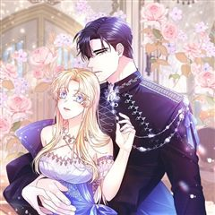
카카오웹툰레이디 에디타
치킨을 시켜 먹다 잠들었던 ‘나’는 다음 날 생전 처음 본 이 세계에 사는 ‘레이디 에디타’가 되어 있었다! 황당한 것도 잠시, 모태솔로인 나에게 이미 약혼자가 있다고? 또 다가오는 저 남자는 도대체 뭔데…?
고자극로맨스로판로맨스카카오웹툰에서 보기 → -
12
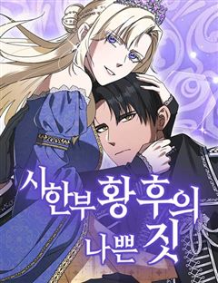
네이버웹툰시한부 황후의 나쁜 짓
정략결혼이었지만 첫사랑이었다. 황제여서가 아니라 당신이어서 사랑했다. 휠체어를 탄 몸으로 스텔라는 제국과 남편을 위해 헌신했다. 그러나 돌아온 것은 처절한 죽음. 여신은 사지가 마비되어 죽은 스텔라를 회귀시켰다. 이번 생에서도 소꿉친구를 선택하는 남…
고자극로맨스로판로맨스네이버웹툰에서 보기 → -
13
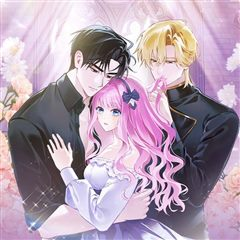
카카오웹툰결벽증 흑막놈의 가이드가 되기 싫다
‘아르테온의 구원자 가이드’라는 게임의 엑스트라 ‘로즈 발렌타인’에 빙의했다. 로즈는 가이딩을 숨길 수 있는 특수한 능력의 소유자. 하지만 가이드의 의무니 책임이니, 사랑하지도 않는 사람과 스킨십까지 해 가며 가이딩하고 싶지 않았다. 결심했다! 가이…
고자극로맨스로판로맨스카카오웹툰에서 보기 → -
14카카오웹툰
오만한 후회
첫사랑이자 짝사랑 중인 순애보, 스텔라 엠브로즈. 무려 십여 년간 마음에 품어온 남자가 있다. 어느 날, 그 남자가 십 년 만에 수도로 돌아왔다. 스텔라는 우연히 기도하던 중 공작과 마주치게 되는데. 하지만 그는 경멸스러운 시선을 보내왔고, 상처받은…
고자극로맨스로판로맨스카카오웹툰에서 보기 → -
15
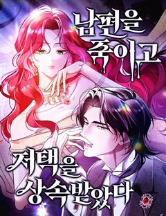
네이버웹툰남편을 죽이고 저택을 상속받았다
몰락한 가문의 막내 이브니에. 신부로 팔려간 첫날 밤, 자신을 제물로 바치려는 신랑을 죽이고 벨페르 저택의 주인이 된다. 이 기이한 저택에서 살아남으려면 숨겨진 괴담을 찾아 종속시키는 것 뿐. 절망한 이브니에의 꿈에 정체불명의 남자가 나타나 그녀를…
고자극로맨스로판로맨스네이버웹툰에서 보기 → -
16
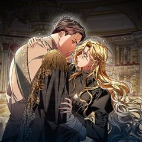
카카오웹툰알브레히트의 진주
사라진 알브레히트의 진주, 마침내 그 행방이 밝혀지다! “그래서 저와 결혼하려는 거라고요? 차라리 진주를 가져가세요!” 무엇인지도 모른 채 황실 가보를 갖게 된 루이제와 진주의 진짜 주인 카이어스. “이런.” 카이어스의 기다란 손가락이 루이제의 턱…
고자극로맨스로판로맨스카카오웹툰에서 보기 → -
17
 카카오웹툰
카카오웹툰흑표 가문의 설표 아기님
잡종으로 태어나 외할아버지에게 학대당하다가 죽었다. 내가 가문의 이능을 발현하지 못한 쓸모없는 아이였기 때문에. 기억을 가진 채 과거로 돌아왔지만, 선택지는 과거와 그리 다르지 않았다. 이대로 살다가 전생과 똑같이 학대당해 죽거나, 나를 끔찍하게 싫…
인외존재로판로맨스카카오웹툰에서 보기 → · 흑표 가문의 설표 아기님 같은 웹툰 → -
18
 카카오웹툰
카카오웹툰아기 다람쥐가 다 잘해요
사자 가문에서 태어난 유약한 다람쥐 수인 베아티. 그 탓에 수도 이모집에서 구박데기로 살다 유일한 친구이자 약혼자인 2황자에게 꿈을 이루기 위해 떠나겠다고 말한 순간, '리테르 너 이 나쁜 새끼…!' 그놈의 독니에 죽었다. 다시 눈을 떴더니 2왕자와…
인외존재로판로맨스카카오웹툰에서 보기 → · 아기 다람쥐가 다 잘해요 같은 웹툰 → -
19
 카카오웹툰
카카오웹툰여주인공이 나를 새언니로 점찍었다
빨간망토가 늑대를 잡아먹는 19금 피폐 여공남수 소설에 빙의했다. 문제는 그 늑대가 바로 내 남동생이란 사실! 동생과 깊은 숲속에 숨어 인간계로 도망갈 계획을 세우던 중, 눈밭에 쓰러진 여자아이를 발견했다. 아픈 아이를 지나칠 수 없어 지극정성으로…
인외존재로판로맨스카카오웹툰에서 보기 → · 여주인공이 나를 새언니로 점찍었다 같은 웹툰 → -
20
 네이버웹툰
네이버웹툰수인 보호소에서 남주를 입양해 버렸다
피폐삽질 소설의 시에나 로베트라는 악녀에 빙의했다. 돌연변이라는 이유로 표범 가문에서 버려져 수인 보호소에 온 남주를 괴롭히다, 뒤늦게 아들을 찾아온 공작에 의해 단명하는 역. 어떻게든 살아보겠다고 팔불출 아빠를 설득해서 공작이 오기 전까지 이반을…
인외존재로판로맨스네이버웹툰에서 보기 →